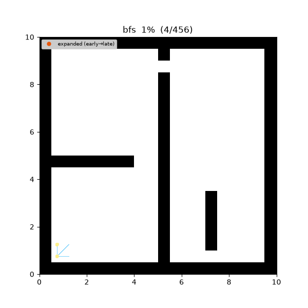
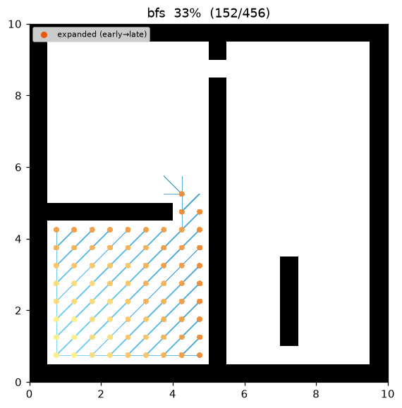
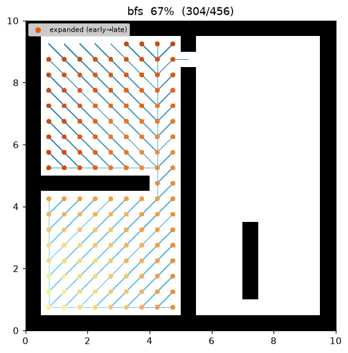
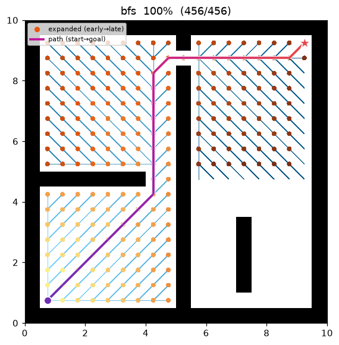
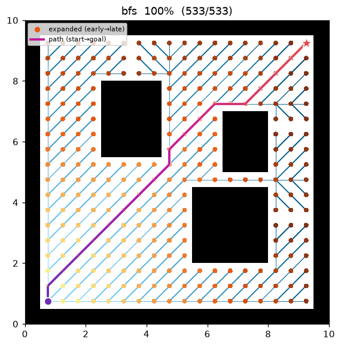
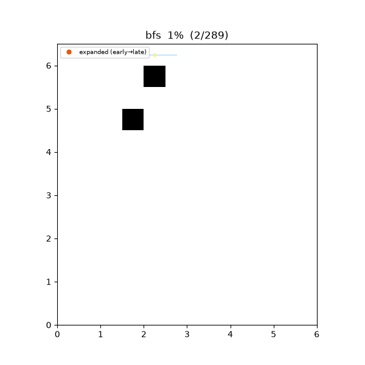
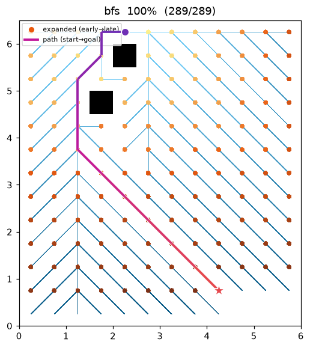
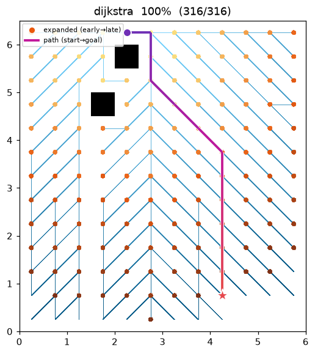

BFS — Breadth-First Search¶
| Item | Description |
|---|---|
| Category | uninformed graph search |
| Required capability | DiscreteSpace |
| Completeness | complete (finite graphs) |
| Optimality | fewest edges — cost-optimal only on unit-cost graphs |
| Complexity | time O(V + E), space O(V) |
| Origins | Moore (1959) 1, Lee (1961) 2 |
Background¶
BFS is the most fundamental graph search: it grows the frontier outward from the start node in order of proximity (measured in edge count). As a path-finding algorithm it traces back to Moore's maze-search work1 and to the Lee algorithm2, which independently applied the same idea to circuit routing. It is the baseline for understanding Dijkstra and A, and on grids with uniform edge cost it remains a valid shortest-path algorithm to this day*.
How It Works¶
Search progress on maze01 (20×20, narrow-passage maze). The frontier can be seen spreading uniformly, independent of cost.

Intermediate search progress (left → right: early / middle / final path):
 |
 |
 |
Final result on open01 (open field):

It runs on a single FIFO queue. A node popped from the queue is settled (expanded), and every not-yet-visited neighbor is pushed onto the queue. Every node at edge count k is settled before any node at edge count k+1, so the path at the moment the goal is first reached is a minimum-edge-count path.
BFS(start, goal):
queue ← [start]; visited ← {start}; parent ← {}
while queue is not empty:
v ← queue.pop_front() # FIFO — this single line defines BFS
if v == goal: return reconstruct(parent, goal)
for (u, _cost) in neighbors(v): # cost is ignored
if u ∉ visited:
visited.add(u); parent[u] = v
queue.push_back(u)
return failure
Warning
The grids in this repository are 8-connected, with diagonal moves costing √2. In other words, costs are not uniform, so a BFS path minimizes only the edge count and may not be optimal in world distance. When the demo shows BFS and Dijkstra producing the same path cost, that is a coincidence of these map structures, not a guarantee.
Measurements (Python, trace on):
| map | path cost | expanded nodes | path len |
|---|---|---|---|
| maze01 | 28.728 | 221 | 26 |
| open01 | 25.213 | 267 | 20 |
On the same maps, A* expands only 108 / 71 nodes respectively, thanks to its heuristic.
Reproduce:
python python/demos/demo_bfs.py \
--map maps/grid/maze01.yaml --scenario maps/scenarios/maze01_s1.yaml \
--params configs/global_planning/bfs.yaml --trace out/bfs.jsonl
python tools/viz/replay.py out/bfs.jsonl --gif out/bfs.gif --snapshots out/bfs_snaps/
Properties¶
- Completeness: on a finite graph, if a solution exists it is always found.
- Optimality: shortest in edge count (hop count). Cost-optimal only when edge costs are uniform.
- Complexity: time O(V + E), space O(V) — the entire frontier is kept in memory.
Why It's Shortest — Proof¶
Notation: let \(\delta(s,v)\) be the minimum number of edges (hops) on any \(s\to v\) path, and let \(d[v]\) be the depth recorded when BFS dequeues \(v\).
Lemma (two-depth queue invariant). At any moment during BFS the depths of the queued nodes take at most two consecutive values \(k,\,k{+}1\), with the depth-\(k\) nodes ahead of the depth-\((k{+}1)\) ones. Hence the dequeued \(d\) values are non-decreasing.
Proof. Induction on the number of queue operations. Initially the queue is \([s]\) with depth set \(\{0\}\) — holds. In one step we pop a front depth-\(k\) node \(v\) and append its unvisited neighbors (depth \(k{+}1\)). If depth-\(k\) nodes remain at the front the state is still \(\{k,k{+}1\}\); once the last \(k\) is popped the state becomes \(\{k{+}1,k{+}2\}\) with \(k{+}1\) at the front. FIFO makes insertion order = extraction order, so the front/back arrangement is preserved. ∎
Theorem (hop-optimal). At the moment \(v\) is dequeued, \(d[v]=\delta(s,v)\).
Proof. Induction on \(\delta\). \(d[s]=0=\delta(s,s)\). Take \(u\) with \(\delta(s,u)=k{+}1\). The node \(v\) just before \(u\) on some minimum-hop path has \(\delta(s,v)=k\), and by the induction hypothesis \(v\) is dequeued at \(d[v]=k\). If \(u\) is unvisited then, it is fixed to \(d[u]:=k{+}1\); if already visited, the lemma says that visit happened at depth \(\le k{+}1\). Either way \(d[u]=k{+}1=\delta(s,u)\) (the lemma rules out \(d[u]<\delta(s,u)\) — no shallower path reaches \(u\)). Hence the path found when the goal is first reached is hop-minimal. ∎
BFS is unit-cost Dijkstra. The FIFO queue is really a bucket priority queue keyed by the integer depth. When every edge costs \(1\), a node's minimum hop count equals its minimum accumulated cost, so BFS's dequeue order coincides exactly with Dijkstra's extract-min order. The hop-optimality above is thus the unit-cost specialization of Dijkstra's optimality proof — BFS obtains it with an \(O(1)\) queue instead of a \(\log V\) heap.
Cost-optimality caveat. With edge weights \(w_e\), a path costs \(\sum_e w_e\). Hop-minimal equals cost-minimal only when all \(w_e\) are equal. This repo's 8-connected grid has \(w\in\{1,\sqrt2\}\) and is not uniform: a single diagonal step (cost \(\sqrt2\approx1.414\)) is counted as the same 1 hop as an orthogonal step (cost \(1\)), so BFS may pick a diagonal-heavy path that has fewer hops yet is longer in world distance (its match with Dijkstra in the demo is a coincidence of this map's shape).
Complexity. Each vertex is enqueued/dequeued exactly once (\(O(V)\)); each adjacency list is scanned once, so \(\sum_v\deg(v)=2E\) — total \(O(V+E)\). With no heap, Dijkstra's \(\log V\) factor disappears.
Counterexample: fewest hops ≠ cheapest cost¶
BFS minimizes only the edge count (hops), so on an 8-connected grid where a diagonal costs
\(\sqrt2\) it can pick a path that is more expensive in world distance even at the same hop count.
In bfs_hopcost01 an obstacle right below the start pushes BFS's search (orthogonal-first → it claims
the left cell) into a left-leaning diagonal detour, so BFS and Dijkstra take the same 12 hops
yet differ in cost:
| BFS (fewest hops) | Dijkstra (cheapest) | |
|---|---|---|
| path cost | 14.899 | 13.243 |
| hops | 12 | 12 |
| route | bulges left, then diagonals back | leans straight toward the goal |

| BFS route — cost 14.90 | Dijkstra optimum — cost 13.24 |
|---|---|
 |
 |
The two routes round the same obstacles on opposite sides. BFS trades cheap orthogonal moves for \(\sqrt2\) diagonals and pays \(14.899-13.243\approx1.66\) more — the hops are equal, the cost is not.
python python/demos/demo_bfs.py --map maps/grid/bfs_hopcost01.yaml \
--scenario maps/scenarios/bfs_hopcost01_s1.yaml --params configs/global_planning/bfs.yaml \
--trace out/bfs_ce.jsonl # rerun with Dijkstra to get 13.243 (cheaper)
Emitted Trace Events¶
planning_started → (node_expanded, edge_added)* → path_found → planning_finished
References¶
-
Moore, E. F. (1959). "The shortest path through a maze." Proceedings of the International Symposium on the Theory of Switching, Harvard University Press, 285–292. ↩↩
-
Lee, C. Y. (1961). "An algorithm for path connections and its applications." IRE Transactions on Electronic Computers, EC-10(3), 346–365. doi:10.1109/TEC.1961.5219222 ↩↩